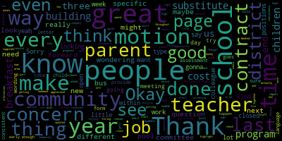
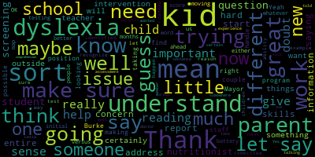
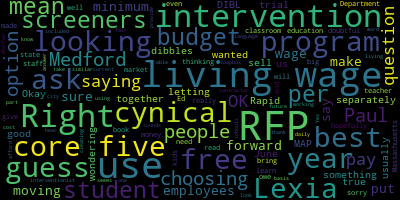
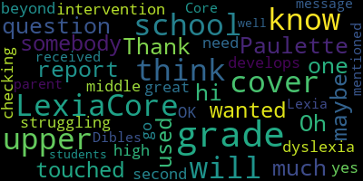

AI-generated transcript of Medford School Committee meeting October 21, 2019
Back to all transcripts
[Burke]: I pledge allegiance to the flag of the United States of America and to the Republic for which it stands, one nation under God, indivisible, with liberty and justice for all.
Thank you.
Approval of minutes of October 7th, 2019 is a motion to approve by Mr. Russo.
Is there a second?
Seconded by Ms.
Van de Kloot.
All those in favor?
All those opposed?
Motion passes.
Approval of bills, transfer of funds, and approval of payrolls.
Ms.
DiBenedetto.
[DiBenedetto]: Okay, so on
I was showing them writing pictures.
On page 10 of 15, Method High School, the amount of $10,034.31.
It just seems high.
Is there any regulation?
Okay.
Okay.
And on that same page further down, it says,
Fillion associates other supplies in the end when you add them together.
It's nine thousand four hundred and thirty two dollars and ninety three cents That's the what
[Patterson]: That's out of a revolving account.
So I can look up what exactly those would cover.
[DiBenedetto]: It's just all together.
It's just other supplies.
I just was curious what they were.
If you could email us, that would be great.
And then...
Sorry.
On page 12 of 15, Groundmaster Corp, for $390, it was unclassified.
I just was wondering, I'm assuming it's some kind of landscaping, but I just was wondering where and why it wasn't classified.
It's the Edgerly Field, so that's just the title of the account.
And then further down on page 13 of 15,
The pool service company, it was almost, you know, a little more than $2,600.
Was there a problem with the pool?
Because I think the pool was closed once.
Closed for a couple of days.
[Patterson]: These are for chemicals on a routine basis.
Oh, that was routine.
So, and the fill in supplies is the same program.
I can just get you a summarized list of what was purchased.
[DiBenedetto]: Okay.
And thank you for
Thank you for all the answers.
I appreciate you always answering them.
And the pool was just closed for a few days.
They just changed the chemicals and reopened.
Great.
Thank you.
Motion to approve.
[Burke]: There's a motion on the floor by Mr. Russo for approval, seconded by Mr. Benedetto.
Roll call vote, please.
[DiBenedetto]: Yes.
[SPEAKER_18]: Yes.
[Burke]: Yes.
Seven in the affirmative, zero in the negative.
Motion passes.
Report of secretary?
None.
Report of committees?
School committee?
None?
I know there is an individual that would like to speak, but I believe they are out in the hall.
Can we table community participation at this time?
So moved.
So moved to table it.
Is there a second by Mr. Russo?
All those in favor?
All those opposed?
Motion is tabled.
Community participation.
Report of the superintendent.
The superintendent's updates and comments.
Madam Superintendent.
[Edouard-Vincent]: Good evening, everyone.
This past weekend featured perfect fall weather, and many events were held outside that our students and families could enjoy, including the Harvest Your Energy Festival, the McGlynn Middle School's PTO Yard Sale, and the Brooks PTO Annual Fall Fest.
However, the weather last Thursday was not so great.
with the high winds and heavy rains.
I'd like to thank many people who worked on behalf of keeping our schools smooth functioning.
I'd like to recognize John McLaughlin and the Building and Grounds Department, the Medford Police and Fire Departments, the City's Department of Public Works, and Eastern Bus Company, who working together made it possible for the schools to safely remain in session that day.
Despite the weather on Thursday, Medford High School and the Medford Vocational Technical High School held the eighth grade open house.
The Karen Theater was filled with students and parents and guardians, and there was standing room only space.
High school student ambassadors led tours all over the campus, including the science labs, the fine arts department, the library media center, the vocational technical programs, and the athletic wing.
where all the sports teams were present.
I'm glad that so many of our rising 8th graders and their families were able to attend this important informational session.
I'm also pleased to announce that two of our Medford High School students, Lang and Qing Cheng, twin sisters, each received $500 from the Pace family and the FAA USA.
the Federazzini Associazioni Abruzzi to celebrate Italian Heritage Month.
To be considered for the scholarship, the students had to write an essay describing their experiences with Italian culture and language.
The students plan to continue to study the Italian language in college and hope to travel to Italy someday.
Congratulations to the both of them.
I'm also pleased to announce that due to the efforts of Molly Layden, our Director of Technology, Library and Media, who applied for a Makerspace grant through the Verizon Foundation, the Medford Public Schools was selected and we will be awarded $10,000.
So it came in after the announcement, so we'll
presented formally at our next meeting.
This grant will enable Medford High School and the Medford Vocational Technical High School to create a shared STEAM makerspace to be used by core academic subjects and CTE programs that will enable academic and career preparation connections.
Students and teachers in multiple programs and courses will use the makerspace
to plan, design, create, and synthesize projects using interdisciplinary project-based learning to solve and engage in STEAM activities.
This is a long-time goal of this department and the Medford Public School District.
Molly will be in attendance, as I said, at our next meeting to explain the full process in more detail.
In the meantime, we thank Verizon for choosing us and commend Molly for applying for the grant.
Also, recently, Casset, Inc., in collaboration with the Sons of Italy, welcomed students in honor of Italian American Heritage Month, which is the month of October.
Students were invited to create a booklet on the 500th anniversary of the death of Leonardo da Vinci, which celebrated his life and his works.
The winners of the essay contest were hosted at this event.
Casset Inc.
is a non-profit educational and professional organization that promotes Italian language and culture in public and private schools throughout New England.
As you are aware, Medford is one of the schools who partner with them.
Medford took home second and third place awards.
First place went to Our Lady's Academy, fourth grade in Waltham.
The students were awarded $250.
Our second place students were from the Brooks Elementary School, the fifth grade class.
They were awarded $200.
And I'd like to say a special thanks to the teachers, Jennifer Conte, Laura Odegardi, and Principal Suzanne Galussi.
Our third place winners were at the McGlynn Elementary School, fifth grade classroom.
And I'd also, they were, the students were awarded $150.
And special thanks to the teacher, Debbie Notaro, and principal, Diane Garino.
Just a reminder to everyone that this Wednesday, October 23rd, Medford High School will be hosting both the planning for college information session
for students with IEPs and on 504s and their parents or guardians at 5.30 p.m.
in the third floor science lecture hall.
And the annual college fair will be immediately following that in the Medford High School gym at 6.30 p.m.
So this Wednesday, October 23rd.
Thank you.
[Burke]: Thank you very much, Madam Superintendent.
Could I have a motion on the floor to resume community participation?
Moved by Ms.
Krebs, seconded by Mr. Benedetto.
All those in favor?
Aye.
All those opposed?
Community participation.
Your name and address, please.
[Rodriguez]: Hi, I'm Cheryl Rodriguez, 281 Park Street.
I just came to, I wanted to speak about the bus two at the middle schools.
My daughter is a sixth grader at the McGlynn, and we've had a few issues with that bus.
One of the issues is the bus is at the Andrews, so the McGlynn students walk over, and last Friday in the wind and the rain, by the time they walked over, the bus was full, and the kids had to sit three and four across.
That seems to be a regular Friday occurrence.
Right now, the bus is slightly full during the week because the cross-country team, which has 40 members right now, they're not riding the bus on Mondays, Wednesdays, and Thursdays, but I anticipate that that will become an issue at the end of the month when that season ends.
A couple of times she's been denied access to the bus.
One time she was diverted to a different bus and taken on a ride to Winthrop Street to Goldilocks Bagels, at which point she was on the phone with me telling me she didn't know where she was and I could hear about six or seven other children in the background screaming, don't leave us here, we don't know where we are, don't leave us here.
They were returned to the school.
I called, I didn't know at the time that it was not going to the McGlynn, it was going to the Andrews.
I called the McGlynn and spoke to the secretary who was going to try to page Mr. Tucci, but by the time they got him, the children had been deposited at the Andrews and told that they were on their own and to walk home.
At that point they walked across Riverside by themselves, across Salem Street by themselves to get home.
There was a handful of kids, luckily one of them was an 8th grader, the rest of them were 6th graders who were shocked in the second week of school to find themselves walking home alone.
So they've already moved one stop off of this bus to another bus because of overcrowding But it's continuing to be an issue that we've called Several times asked them to to track and monitor, but they don't ask the children to sign up which bus they're going on so It's kind of a guesstimate how many kids will be on the bus?
But I think when winter comes it's going to be more of an issue a couple of kids said that they're sitting on other kids laps Because they're told they can't stand, but there's nowhere for them to sit
So it's a real crowding issue.
[Edouard-Vincent]: I can definitely I can definitely look this is the first time I'm hearing it so it was not Brought to my attention and you said it was bus number two.
[Rodriguez]: It's bus number two.
It goes on downtown Street I've reported it to the principal a few times and I was really upset when they the couple of times that they had to walk home So, okay, so I will definitely be able to follow up with the bus company tomorrow.
Okay.
Thank you.
Thanks.
I appreciate very much Thank you
[Burke]: Item number two, recommendation to approve grant for head starting turtle project.
Jody Driscoll and Ivy Carnival Chiefs.
Good evening.
[Carnival]: Hello, Mayor Burke, Superintendent and School Committee.
Jody Driscoll could not make it tonight, so it's just me.
I'm actually going to read what you all have, because that's what I got.
The Morton and Spopari Family Foundation has provided funding for the Medford High School to support the Blanding's Turtle Headstarting Program.
This is the first year the Morton and Spopari Family Foundation has selected to fund this project for us.
The total funding for the grant is $2,205.72.
In 2015 to 2016 school year, participation in the Blanding's Turtle Headstarting Program began at Medford High School.
Participation provides high school students and community members an opportunity to meaningfully contribute to the maintenance of viable populations of at-risk and endangered native species in the Northeast Massachusetts.
The turtle head starting success rate is that
Turtles have about a 40 times greater chance for reaching their 14th birthday.
I know it's some random numbers for you, compared to those born in the wild.
I would like to recommend that the school committee accept the grant funding.
[Burke]: Very good.
It's a motion to approve by Ms.
Mostone, seconded by Ms.
Kretz.
Roll call vote, please.
[SPEAKER_18]: Yes.
Yes.
Yes.
[Burke]: Yes.
Yes.
Seven in the affirmative, zero in the negative.
Thank you so much.
Thank you.
Thank you.
Item three, report on first annual Medford Vocational Technical High School fundraiser.
Mr. Fallon and company.
[Fallon]: Good evening.
[Burke]: Good evening.
[Fallon]: Thanks for having me.
So really what you have in front of you is a proposal for time to celebrate.
Going into year three of the Bistro being open now and we decided we want to do some kind of fundraiser to add to our programs.
So what I've done in the past at my previous schools and it proved to be very successful was to have a fundraising dinner.
Basically what happens is
The Culinary Arts Department will provide the meal.
We'll get a one-day liquor license.
We'll also have other programs help us to design a theme, some props, set up for the event.
I have a few teachers who are in different bands or they play different instruments.
They want to be part of it as well for the entertainment.
Really, we're looking for approval for a spring date sometime in May.
It would be an evening event open to the community.
Tickets would be somewhere from $100 to $125 each, and it would all be a fundraising opportunity.
[Burke]: So May 2020, correct?
Yes.
A motion to approve by Ms.
Mastone.
Is there a second by Mr. Ruggiero?
Second.
Ms. DiBenedetto?
[DiBenedetto]: This is a great initiative, and I think it's a way to highlight the new bistro and to show other community members that they could utilize this space and rent it and do other things with it.
Once we have them in the door, we can tell them about all the other great programs like getting their hair done and their oil changed and a dent pulled from their car.
So like even if we have people there that night to just highlight some of those other things, it would be a great idea.
[Fallon]: I mean, now it's fully lit up at night.
We have ample parking, so we feel like the time is right now.
[DiBenedetto]: It's great.
And maybe we can even use the deck.
open it up there, too.
[Fallon]: Well, that's a way that we can bring on some heat lamps, too, with that extra space.
So yeah, we did think about that.
[DiBenedetto]: That would be great.
[Fallon]: We'll do it later in May.
[DiBenedetto]: Great idea.
Great thinking outside the box.
[Burke]: Very nice.
On the motion for approval of the fundraising effort, all those in favor?
Aye.
All those opposed?
Motion carries.
Thank you, Mr. Fallon.
Thank you.
Great.
Thank you.
Recommendation to approve creation of new revolving account, MVTHS Fundraising.
Ms.
Patterson.
[Patterson]: So this is on the heels of the newly approved fundraising event, so in order to facilitate that through the fiscal component, I do need to request and have your approval to have a new fund established, a revolving fund for that purpose.
[Burke]: Very good.
Is there a motion on the floor from Ms.
DiBenedetto, seconded by Ms.
Kretz?
Roll call vote, please.
Yes, seven in the affirmative, zero in the negative.
Motion passes.
Thank you.
Report on new hires, retirements, and personnel.
Ms.
Patterson.
[Patterson]: So we did provide the most updated listing with information and transactions that have occurred through today to show the level of movement within the district.
So we provided two listings, hire listing by program type so you could see
how many either after school program folks that have been hired, how many paras, how many teachers.
Again, this is a moving list with activity that occurs on a daily basis with regard to either resignations and or people that are out on leave.
We do have
The subsequent list that identifies the retirements and resignations as of this new fiscal year, so anybody from July forward that we have been given information on is the list that was provided to you as well.
And we do have a significant amount of movement that I think it's relevant to share and identify that as
a seemingly small organization, there is a lot of transition with a very small office that handles all of this.
So we have been working very hard over the summer and over the start of the school year to try to ensure that we have all the key positions filled.
It's still an ongoing issue.
We do have a number of people that
are out on maternity leaves and or other types of unpaid leaves.
So we continue to try to fill those as we possibly can.
Getting further into the school year, it is more difficult to hire, as most folks within a school have already been hired by a school department, if that's the case.
But we do continue to hire for ongoing food service,
for different daily substitutes and things of that nature that are a constant rolling retention and rehiring.
[Burke]: Very good.
Thank you.
Mr. Ruggiero.
[Ruggiero]: Thank you, Mayor Burke, and thank you very much for the report.
So going through the list of resignations here, I noticed that our nutritionist retired.
So who's current, do we have any backup nutritionist, or is Rhetta the only one?
[Patterson]: No, that was just a single position that she resigned.
She did not retire.
[Ruggiero]: So are we anticipating on hiring someone new?
And if so, when are we going to post the position?
[Patterson]: We have not at this point in time.
We are still doing the pilot program and that's been the focus at the moment.
So we just hired a new kitchen manager and a new utility driver.
So there have been a number of positions within food service that we are trying to fill at this point.
[Ruggiero]: Yeah, I mean, my concern is that not having a nutritionist on staff for the entire district I think is not a great idea as we're piloting a new program like you're saying.
So I seriously would like to suggest that we start looking to fill that position as soon as possible or find some sort of solution.
Secondly, just I suppose a little greedy for me, I mean, who's gonna be taking care of the blueberries in the middle of the high school?
Do we know what's going on with the outdoor,
[Patterson]: That would be something that either student facilitated and or additional volunteer for that.
[Ruggiero]: So right now we don't.
[Patterson]: Correct.
That was not a part of her role.
[Ruggiero]: I know.
She was just taking it on.
I know she did a lot of work, including making hummus for the kids.
This is concerning to me, especially with some other information that we have.
So I just would like to be updated when we find out more about it and when we're going to be filling out the role.
[Burke]: Very good.
Thank you.
Ms.
Van der Kloot.
[Van der Kloot]: Hi.
I noticed that quite a number of people have been brought on after the start of school.
So, for example, let's just use the paraprofessionals that have been brought on, say, in October.
There's one October 8th, one October 15th.
The second one, et cetera.
So at the beginning of the school, we have many new employee induction programs.
people are hired and have a later arrival.
How are we making sure that they are up to date on all of the information they need to or would have gotten had they been hired in an earlier time?
[Patterson]: So any information in terms of the start of school would be reliant upon their department heads and their building principals in terms of any
additional training or mandatory items that they would have received as a new hire.
The para group does not go through the rigorous process that teachers do, but they do get information and notification on that, and that would be up to the building-based principals and the department heads.
[Van der Kloot]: Do we have some sort of check-off list to make sure, for example, that everybody is aware of our emergency plans?
[Patterson]: So the emergency plans, again, would be building-based.
So that's not a process in HR that we facilitate.
[Van der Kloot]: Okay, I think we need to follow that through at some point, so thank you for that information.
The second question is, I noticed cheerfully that we have hired quite a few people in the after-school program, and I would like to ask for a update on the after-school program at a meeting in the near future.
Thirdly, one last, I understand we have a teacher out, a science teacher out and at, oh I think it's the Andrews 8th grade.
and parents were concerned about who was going to replace the teacher.
And Dr. Maurice, you and I corresponded about this, saying that right now it was a certified teacher, but not certified in science.
So the question is, is are we seeking a certified
science teacher to replace that, because I think that there is concern, especially given that the students had a teacher, the same group of students had a teacher out last year.
So that's two years in a row that they would be having a non, or I don't know who took the place last year, but I do know right now that we have a person in there who may be terrific, I don't know, but is not certified in science.
[Edouard-Vincent]: The current teacher is a certified teacher, but not certified in science, has had a lot of exposure, has worked with science and science programming.
So I was given that information.
His current role, he was operating as the building, he was building based, the ISS at the Andrews.
So at this point in time, because
We don't have, we didn't have the complete information in terms of the length of the leave.
So the normal practice would be to put a substitute in place.
So that's who was there for the time being.
And we'll be able to revisit that.
[Van der Kloot]: Okay.
Could you provide us with an update on that?
And also again, because of the concern, I would like to ask that, you know, the
the new teacher be monitored carefully just to make sure that he or she is doing whatever they're supposed to be doing.
Yes.
[Burke]: Thank you.
Mr. Benedetto.
[DiBenedetto]: Thank you.
First of all, I want to say thank you for the report.
There's a lot of work that your department's done to onboard
and to do exit interviews for people who have retired and left.
I appreciate you doing it so quickly.
I had some more questions, though.
I wanted to know how many open positions do we currently have throughout the district and what those positions are, like if we do need
Substitutes for specific teachers or categories, how many people are on leaves and what kind of job titles we're looking for.
So I can help because I work in education.
I might hear of people available throughout the community if the community knows that we're in a situation where we do have openings.
Someone may have a few months.
that have a licensed teacher or retired teachers might see that and see the need and step up for us.
So I asked for it for that reason.
And it can be ongoing.
It can be in the next few weeks, whenever you can get it.
[Patterson]: So I can express that all the open positions are posted actively on our website.
And it leads you to the direct hiring platform.
And most of the long-term positions that we needed to fill
have been filled.
We have an ongoing list, as I indicated, for food service, for daily subs, things of that sort that we leave open.
But the majority of the actual position types that were needed for classroom coverage we have addressed, again, sometimes not in the exact capacity, but with a licensed teacher.
So that has been identified.
So I would encourage everybody to visit our
site that is on, it's attached directly to the Medford Public Schools website and it brings you directly to our platform that has all positions that are open and we encourage folks to apply at any given point and we continue that onboarding process.
[DiBenedetto]: And that includes like open temporary positions for short-term and long-term leaves.
Correct.
Okay, great.
That's good to know.
I agree with my colleague about substitutes.
A parent had asked me if substitutes or paras or other professionals within the building are trained
with our emergency plans for the building that they're serving in and their lockdown procedures.
So my hope is through the administration, there could be some type of procedure or policy in place for each building for onboarding of temporary and new staff that gets hired after the initial orientation week, just so we check all the boxes.
Another question that's come up is, are all people within our schools, even volunteers, are quarried?
[Patterson]: Yes, absolutely.
[DiBenedetto]: Yeah, OK.
Just putting every question that I've received out there.
My other concern is, as my colleague noted about this specific science teacher, part of the reason there was concern is because eighth grade is a year that we test for MCAS.
And if they've had substitute last year and they're again
But I trust your judgment and if you're telling me that Substitute is a certified teacher and you're supporting them with the new programming and that our director of science is gonna be checking in and really helping them along the way, that I would feel comfortable telling parents that as they approach us and ask us and bring forward their concerns, which I'm really grateful for.
We get a lot of emails and a lot of reach out
people on my porch around town, I'll text you different things that people are asking to just clarify, because I don't know them all.
I did notice today when I was on the website that I think we're not having a meeting on November 4th, so our meeting dates have to be updated there, because that hasn't been updated, just to reflect that.
So people are aware that I don't know exactly which dates.
I was trying to fill out my, if we're rescheduling the next Monday is a holiday, Veterans Day.
So I didn't, yeah, yeah.
I didn't know if we were going to try it next week or after that, but it's just, just so we're all aware and on the page with that.
I do try to check different things.
Um,
I was sad to see that our nutritionists left, especially in the middle of a program, because we were really hoping for success with this new breakfast program.
I also was wondering, at the last meeting, we talked a little bit about the middle school bus just getting there right on time for class.
And has any movement happened with that so that children are there early enough to ensure they have time to grab a breakfast or eat their breakfast before going in?
I know I'm putting you on the spot with that.
[Patterson]: No.
inform the buses that they could release the students for the purpose of having breakfast in the morning.
And as far as I'm aware of, that has been taking place at all the outside buildings.
Again, the Columbus is a little bit different because they've always had the mandated breakfast after the bell.
So there is, but even at the Columbus, they do have the release of the students on the bus in an effort.
I know that the older age group is eating sometimes beforehand because again, our,
for the participation and success of this program was to serve hot breakfast.
So that is being done.
The actual menu for the breakfast is being updated now.
And I will say that the position of a nutritionist is not necessarily something that is within every food service department.
That was a nicety and it was very beneficial.
So that will certainly be reviewed and looked at.
But in terms of the requirements of the food service program, we are in compliance without that position.
So I want to assure everybody that we are working very diligently to make this breakfast program a success.
We continue to have the increased notification at all the school buildings.
We are trying to encourage our high school students to come in as soon as they arrive on campus
that the cafeteria too has hot breakfast and from our new kitchen manager who's serving scratch breakfast.
I'm talking about scrambled eggs, fresh sausage, there's pancakes, there's French toast sticks, there's all different options that we are really encouraging this participation and we have made every effort to make it successful.
[DiBenedetto]: Thank you.
I know there's a great effort here to provide breakfast for our community, and I think it's a good start, a really good, strong start.
And I also just, my only concern was a parent in the Hillside area expressed concern that the bus doesn't get there early enough for their child to get.
It's not that they're not releasing them, it's that the bus is pulling up right on time for class, so their child doesn't
It doesn't affect this particular child, but it could affect other children from that area that might need time to eat.
because it is before the bell.
That's just a concern when we're talking to the bus company to get them there early enough so that they can participate in all of the program, because without the participation, we're not gonna be able to continue this program.
So it's very important for everybody listening to make sure their children or grandchildren go to school early and have a nice breakfast, and it sounds delicious.
I wish that I was there to participate.
Thank you so much.
[Burke]: Thank you for the report.
[Ruseau]: Whenever we have a teacher that is not certified in the particular discipline, that's reported to DESE, correct?
That shows up on the report card and all that stuff?
[Patterson]: Well, it depends on the length of time.
So again, if we're talking just a short-term leave of absence, if it's under 30 days, it's not
categorically catastrophic according to DESE in that regard.
And there is the ability to teach outside of your core subject area from licensure perspective.
So where we may not have somebody in their particular field, again, science and math are very difficult fields to get somebody, especially once the school year has started, to have a content teacher that is licensed in any of the disciplines is a benefit.
[Ruseau]: course.
Thank you.
And then this is, you know, this is really down into the weeds, but, um, apparently at the McGlynn today there was no French toast sticks available.
They, they were served at all the other schools and they were ran out or whatever.
Um, and that's not really why I wanted to talk about.
Um, but, um,
I've heard from a couple of parents whose kids are allergic to dairy and they went to school today and they were very excited because it's French toast sticks day and they could eat the lunch.
And then they got there and they were replaced with mozzarella sticks because they were out.
And none of that actually particularly bothers me.
What bothers me is that are we really not providing everyday alternatives to fairly common allergies at lunch?
[Patterson]: Well, I can say that they do address the allergy.
If there was, I know the French toast sticks were on the menu at most locations today, so it could have possibly been that they ran out.
Does that mean that that was the only option?
They probably could have had others, and we will certainly look into that.
But usually, if they run out, that was a popular menu item.
I would say that that's great participation, so.
[Ruseau]: I would completely agree.
My question was really around like.
[Burke]: But that's lunch time, right?
That's lunch.
[Ruseau]: This is lunch.
And I guess my question is like, if you are allergic to dairy, does that mean only certain days of the week you can eat lunch?
Or can you eat lunch every day?
No.
And I don't know, because I'm not allergic to dairy.
[Patterson]: They should have other options.
The main item might not have been to their liking.
So that would have been.
[Ruseau]: I wasn't with the kids, so obviously I don't know that.
OK.
Thank you.
[Burke]: Very good.
Is there a motion on the floor to accept this report and place it on file?
So moved by Ms.
Vandekloot, seconded by Mr. Aguirre.
All those in favor?
Aye.
All those opposed?
Motion granted.
Item six, report on dyslexia screening tools update.
Associate Superintendent, Ms.
Caldwell.
[Caldwell]: Good evening, everyone.
[Burke]: Good evening.
[Caldwell]: So I just want to start this evening by letting you know how grateful and thankful I am that I'm working with a dream team.
So first I'd like to thank my dream team.
This is Katie Champoli.
She's our coordinator of special education.
Susanna Campbell, our director of speech and language.
And Dr. Nicole Chiesa, who is our director of humanities.
Since we've begun this project back in August, they've been relentless.
in their efforts to make sure that we have our professional development, that we have implementation of our screeners, and that we're moving forward.
I'd also like to thank our superintendent, who is always very supportive of any new initiatives we have.
The principals, the assistant principals, the educators, so just
Just so you know, the educators are very busy learning a new program.
So they've been participating in professional development as well as learning to work with the students in their implementation of the screener.
I'd like to thank the tech staff, because it took a lot of downloading of some of the names with School Brains.
And most importantly, right now for me, and for the girls who probably agree with me, my executive assistant, Michelle Bissell, has been also relentless in her energy to make sure we get the grant.
And she gets amendments for us.
And I think in the past week, we have laminated I don't know how many RAN assessments.
So we're very lucky to have Michelle on board, too.
So I just want to start with a little bit of history about these screeners.
So just about a year ago, on October 19, 2018, Governor Baker signed into law a bill requiring the State Department of Elementary and Secondary Education, otherwise known as DESE, to issue guidelines to assist school districts to develop screening for dyslexia, screening procedures for dyslexia.
DESE offered competitive grants this past summer and selected districts to pilot grants that were valid and reliable, scientifically based, brief, administered three times a year, and had an inclusion of code and meeting based and or rapid... Automatized, thank you, naming assessments, which is the RAND.
The department approved the following screeners that met the aforementioned criteria.
They approved the ISIP early reading assessment, Lexia rapid assessment, MAP growth reading, and STAR early literacy and STAR reading assessments.
The Columbus School was awarded the MAP grant in late August, and the McGlynn was awarded the Alexia Rapid grant in September.
So you'll notice that in my previous report, I said that the Brooks and the Roberts schools were going to pilot the Dibbles 8.
And we were excited to have Dibble's Aid.
It is a program that you can use all the way through eighth grade, sixth, seventh, and eighth grade, though it's not similar to the Lexia or the MAP programs because it was not an online program.
So it would be similar to doing a DRA, which is a one-on-one with each student, which takes 30 to possibly 45 minutes to do.
However, on October 1st, Lexley Rapid offered to provide the Brooks and the Roberts schools professional development and the use of their online screening tool.
This is the best part.
Well, maybe not, but it's free of charge.
So our screening team reviewed Dibble's 8 and Lexia Rapid and decided that in consideration of consistency, assessment time, and time on learning, and of course meeting DESE criteria, we would accept Lexia's offers to pilot at the Brooks and the Roberts elementary schools.
This is a great opportunity for Medford Public Schools.
The professional development required is less intensive.
The tool itself is mainly online like MAP.
Student assessments take less time.
One of the four screeners, it is one of the four screeners Jesse is recommending for our schools.
So the superintendent and the screening committee agree that this is a win for Medford Public Schools.
In addition, Lexia is offering core five
to our K-2 staff.
Lexia Rapid is a screening tool that we will be using.
Lexia Core 5 is a computer-based intervention tool.
So this is the first time that students use it.
They will log in, and there's a placement exercise for them to do.
And then based on those results, student profiles are created that target intervention to support and grow in the areas of need.
So this would be for the Alexia and also for our MAP students as well.
So as Medford Public Schools conducts this pilot of Core 5, we will offer district-wide optional professional development for K-2 educators.
This is separate from the DESE-funded grant and was generously offered by Lexia free of charge.
Educators who choose to take this training, and we hope that most of our educators take the training, they will be provided professional development after school hours and additional professional development points, PDPs, that can go towards relicensure.
So at this time I'm going to ask
Katie Champoli to talk a little bit about our MAPS program at the Columbus Elementary School.
[Champoli]: So Susanna, you just have this?
OK.
Thank you.
So in August, over the summer, we were informed that the Columbus was granted the MAP assessment grant from the state, which is created by a company called NWEA.
And the assessment is MAP Growth Assessment K2.
So we got that information over the summer, and at that time,
Ms.
Caldwell, myself, Dr. Chiesa, and Ms.
Campbell, and Kathy Kay, Dr. Kay from the Columbus School, we met with Martha Coakley, who was a representative from NWEA, about MAP over the summer.
And at that time, around that time, around the beginning of the school year, Ms.
Kay informed her staff about the award of the grant, and she identified a point person from each grade.
Those point people then participated in a webinar with Dr. K and NWEA to learn a little bit about the assessment.
There were also some online training modules that the teachers watched before the screener was implemented.
Screening then began on September 16th.
Ms.
Coakley, who was our representative at the time, was present at the Columbus that day and helped meet with some of the teachers at that time.
On October 9th, Dr. K had one of her staff meetings, and at that time, she talked to them about review of test results.
In between the testing and the staff meeting, Dr. K had had a number of conversations with Ms.
Coakley about the screener and about how to view the results.
Ms.
Kaye, Dr. Kaye has also had individual meetings with different teachers or small group meetings that have not been mandatory, that have been just based on individual teacher need.
and Ms.
K has relayed any information that the teachers need that she's been able to get from NWEA.
Then on October 16th, we had a more in-depth training.
Two representatives from NWEA came out and met with administrators in the morning and then with staff in the afternoon and really went into detail about how to review these assessment results and how to make meaning of them with respect to their own students and how to kind of
try to inform their instruction based on these results.
So, oops, sorry.
For participating in this grant, the teachers at the Columbus will get 20 PDPs that can be applied towards their relicensure.
The assessment was given between September 16th and September 27th, and that doesn't mean that they were assessed every day between that window, simply that it stayed open in order to account for every student who might have been absent when their classroom did the assessment.
Students spent approximately 20 to 25 minutes on the assessment, then they were able to take a break, and then most students were done within a total of 45 minutes that was including the break.
So as far as what's next, after the assessment was given and the window closed, that's when MAP analyzed this data and generated reports for each of the teachers based on their individual students' performance.
And as part of that report, each student is given what's called a RIT score, which MAP has created and which they have defined as ready for intervention today.
So the students are given an overall RIT score for their reading.
They're also given RIT scores in the areas of foundational skills, language and writing, literature and informational, and vocabulary use and functions.
And those are aligned with the Massachusetts curriculum frameworks.
Every student also got what's called a Lexile range.
And that correlates.
MAP doesn't necessarily put a stamp of approval on the Lexile as far as it compares, if you can take Lexile and compare it with another program for reading.
So teachers can take the Lexile score, go to the internet and see how does that relate with another program as far as picking text for my students in my classroom.
So because MAP
or NWEA didn't create these conversion charts.
They don't give a stamp of approval.
They just say this is the Lexile range for this particular student.
As far as what's next, also, so teachers can take the RIT score and then go to MAPS Learning Continuum, which is a resource that takes that three-digit number
and tells the teachers where their students are ready to learn based on that particular score.
Those are also aligned with the mass curriculum frameworks so that when teachers are introducing a new topic, they can go to the learning continuum to see where students should begin based on their instructional levels.
And that's something that we didn't really get to go into in depth with NWEA at the training last week, but they are happy to talk to us more.
They've been very responsive to emails and requests for additional information.
As Ms.
Caldwell discussed, there will also be optional PD on Lexia Core 5 after school hours.
So even though Columbus is not doing Lexia Rapid, the staff from Columbus still has the option to participate in Lexia Core 5 training, which is their intervention piece, so separate from the assessment.
And it's not related to MAP, but it still can be helpful to all of the teachers.
Because MAP doesn't have its own system of intervention.
They were clear with us that they are an assessment company for K-2.
They're not an intervention company.
So their product is focused on assessment.
But they do have what they call instructional connection providers.
Certain companies that they have identified
that you can take your RIT score to and give it meaning within that program.
And among the instructional connection providers that MAP has is Learning A to Z, and that's something that the Medford Public Schools does have access to.
That's something, again, we really didn't get to go into depth with them about last week, but they're willing to give us more information about that.
And then
The results, I'm going to skip that second bullet because we already talked about it.
And we'll be talking about it more afterwards.
And then one other screener that the staff at the Columbus will be giving is the RAN assessment, because the MAP growth K2 does not include a rapid automatized naming assessment.
So that's a supplement that will be given to the students at the Columbus to assess in that area, which can
These results will be calculated by the teachers, and difficulty on this task could potentially indicate risk for future difficulty with reading fluency.
So that's why we wanted to make sure that we did give that supplement.
And then from there, if they do indicate that this could be a potential area of weakness, then the staff can give intervention focused on automaticity and fluency.
I can give you a little, we put a link here to just show you a little bit about what the assessment looks like.
I should mention also that there is also a follow-up webinar that we are trying to schedule within contractual teacher's hours to show the staff more about the skills checklists that go along with the MAP growth assessment.
It was in a packet that we provided to you, I think, at your last meeting.
So as part of MAP growth K2, if you think about it,
as an umbrella, that's the name of this suite of products.
They have the math growth assessment, which is what the kids at the Columbus have already done.
They have skills checklists, which can hone in further on particular skills.
And that's what they're going to provide a little bit more detail about in this next webinar.
And then it also has a screener that they said was generally intended for incoming kindergartners.
So right here, this link will just show us a little bit about what the students saw when they took the assessment.
Not exactly.
[Campbell]: I'm wondering if we should go through the rest of the PowerPoint and then we'll do all the demos at the end.
Is that okay with everybody, just so that we can finish up the PowerPoint first?
[Burke]: Sure, Mr. Benedetto.
Hold on, I have to.
[Champoli]: The RAN assessment?
Yeah, we haven't identified a deadline for that just yet.
We didn't really want to overwhelm the staff.
They were given so much information.
And they're really doing such a good job of taking this all in and processing all this information that this is giving them about their students.
So we didn't want to overwhelm them by saying, oh, you need to have this done by November 1, especially where the training just happened last week with
with MAP.
So they have the assessment, but we haven't told them we want you to have it done by this date.
No, actually it's given individually.
[Caldwell]: These particular tools for this pilot, yeah, I've done three times a year.
[SPEAKER_05]: Yes, yes, yes.
We hope so.
Anyone who needs any type of intervention, hey, we know that your child is struggling a little bit in this area, and this is what we as a district are planning to do.
We're putting in this special reading block, which I hope you're familiar with.
[Caldwell]: So letters will go home to parents informing them of the different test assessments that we're giving.
It is my understanding that the map went out already to the Columbus School parents and that Lexi has probably already gone out to our Brooks, Roberts and McGlynn parents.
Normally when we do DRA assessments, we don't usually inform parents, but we
can look at that and just let parents know how their children are doing and what the intervention might be for each student.
[SPEAKER_05]: expectations that we'll have to stop that notification at this point, but anyone who falls in the area that we feel any interventions is necessary, I think that that should be followed up either with a formal email letter or just saying, hey, we saw this team, this is the district team, this is what that looks like, you know, we just wanted to partner with you to improve all that we are at
[Caldwell]: So I don't know if this is still on, but I will say that report cards go out for students the first week in December, and normally during that time when the teachers have conferences, they'll be able to share any scores of the assessments that are given to the children.
[SPEAKER_05]: I just want people to realize how proactive they're being with their child's reading.
[Chiesa]: Can I add one thing to that, too?
So MAP, and MAP has a very extensive report that they provide families.
They've condensed it now to be called Family Report, so it's a little more user-friendly for the parents, but it essentially gives all of the information of how the child performed.
It looks at the growth, so when parents sit down with the teacher, they can look at, you know, he started here, he's grown this much,
And it also tells you the readiness skills.
So he or she is ready for blending, or he or she is ready for this.
So it actually outlines that very, very clearly, not just for the teacher, but within that family report as well.
And Lexia has a somewhat similar report.
So the companies themselves will have a nice way of communicating it, which will be helpful to all the educators.
I actually love that MAP report.
It's very informational.
Yeah.
Okay, so we are having a little technical difficulty, but I can continue.
[Burke]: Ms.
Stone.
[Mustone]: I just wanted to ask, so usually when something's too good to be true, it is.
So with Lexia letting us use it for free, does that mean in June we have to budget for $500,000 for this program?
[Caldwell]: So right now, to buy Lexia, it costs a little over $7 for the screener tool.
[Campbell]: per year, per student.
[Caldwell]: Yes, per student.
However, their Core 5 tool is a little bit more than that, or a lot more than that, depending on what you think.
It's $40.
For which one was that?
Lexia Core 5.
That's the intervention tool.
OK.
So yes, I think what Lexia wants to do is prove to the state that Medford is doing outstanding using our product, see the results,
And then the state adopts Lexia, so therefore Medford would have to.
[Mustone]: And then what's dibbles per student?
[Caldwell]: I don't know what DIBL is pursuing.
[Campbell]: Significantly less.
I don't know the number.
We have to remember too that DIBLs, there's three separate things that we're talking about there though.
Because there's RAPID, which is the screener.
So that would be in comparison to DIBLs.
[Mustone]: Okay.
So they are screeners.
[Campbell]: 4 or 5 is an intervention.
It is not a screener.
So if we're comparing the screeners, we would be looking at MAP, RAPID and DIBLs.
We would not be talking about 4 or 5.
[Mustone]: So are we looking at them together then, or are we looking at them separately?
[Chiesa]: CORE 5, we're looking at separately as an intervention tool.
It was something that Lexia offered.
We didn't feel that that was something we should take away from people for this year with intervention.
But we are looking at it completely separately.
And it's also optional for our K to 2 teachers.
So not every teacher will take advantage of the Lex.
Well, we hope they do.
But they may not all take advantage of CORE 5.
[Mustone]: So does DIBL and MAP?
and Rapid sell an intervention program like Lexia does?
[Chiesa]: Matt does not, and Dibbles does not, that I'm aware of with Dibbles.
I know Matt doesn't.
[Mustone]: I'm just wondering, are we choosing it because it's free, or are we choosing it because it's the best option for the screeners?
[Chiesa]: Lexia Core 5 is a very strong intervention program.
It was a wonderful opportunity that we were not expecting Lexia to offer us.
We were expecting just the screener, the Lexia Rapid, to come our way.
This was just an add-on that is used in many different districts and is very well received.
So we thought it was a nice opportunity for the children and the educators.
[Mustone]: So I guess if the trial is for the year, and hopefully we learn which kids need the intervention, and then we will be looking then to use their intervention, the core five, then we do have to budget for $40 a student per year.
for this program if this is what we use?
[Caldwell]: So I think we need to wait for Dessie to weigh in on this.
So the Department of Education, after the whole year of doing all of these assessments with various districts, are then going to take a look at all this information and then choose a screening tool for us.
So it may be that they say Lexia is the tool, or they might choose one of the others.
[Mustone]: Right, and I guess, I'm sorry I'm being cynical, and I owe that to Paul, because he says there's big money in education, and he's right, because he made me read a book about it.
So I guess I'm just doubtful that, what is, is Lexia, is this really the best option out there, or do they market themselves so well, and give it to people for a year for free, that we end up thinking it's the best and we use it?
[Campbell]: So when you're talking about how we selected the screeners to use, these were screeners that DESE put on their list that they wanted piloted.
So that was their decision that we already had on there, that NWEA, MAP, and Lexia Rapid.
Those were both assessments that were put out by DESE.
So you have to remember that what's happening at the McGlynn is a DESE grant.
So we are doing this for DESE.
They're looking at it as a potential that they might recommend to the state.
So that isn't that we were just listening to marketing.
That was something that DESE provided.
[Mustone]: And I'm not even being cynical just with the state of Medford.
I'm being cynical with the Department of Ed of Massachusetts.
[Chiesa]: We really don't know what the Department of Ed is going to do yet.
They are tasked with the challenge of outlining the guidelines that will be needed for a dyslexia screener.
When we were meeting with the MAP people the other day, they gave us examples of other states that had certain
components that the state had required for the screener.
We're not sure yet, and I don't think Dessie's sure yet, of exactly which components they're going to outline.
We have a very good understanding of it, but not a definite.
And I think that's what they're doing with the screeners, because they're trying out the different ones to see which one's going to hit where they feel like the most essential components are.
[Mustone]: And then with the core five for the intervention,
Is that, would that bring on more staff, or you are saying the classroom teacher would be the interventionist using the core five?
Yes.
[Campbell]: And or title one, and or EL, because they are also being trained.
[Mustone]: OK.
OK, thank you.
[Campbell]: All set?
We have a bunch in the queue right now.
Oh, sorry.
So we are having some technical issues, as you can tell.
So I think what would be best is if we present the rest of our presentation just orally.
And then if I can get on, I will show the demos at the end.
But I'm not having any luck with the PowerPoint.
So I think maybe I can stop blinding you for a moment.
[Burke]: Thank you.
We have a bunch in the queue right now.
OK.
Are you asking to hold questions until you complete?
I would like to finish the presentation.
If we could all be patient and let them finish.
OK.
Thank you.
[Chiesa]: So I'm going to go without the presentation up front, but Susanna and I are going to present to you a little more information about Lexia Rapid.
So as our associate superintendent mentioned, Medford Public Schools was awarded the grant for Lexia Rapid.
And I want us to think very separately, put Core 5 out of our brains right now, we're on Lexia Rapid, the screener.
So the McGlynn was awarded that.
and then we were also offered free of charge to the Brooks and the Roberts Elementary School.
To prepare for this adequately, we have two different professional development dates so far.
The first date was most recently October 16th.
The McGlynn had their own professional development because they are doing this through the state, and the Brooks and the Roberts came together
had a live person to do their training, which is called the rapid rollout, which was mentioned in the report.
So they were trained in how to implement the assessment and learned more about Lexia overall for those that were not as familiar with it.
On November 20th, the teachers, this is K-2 teachers, this is Title I teachers, special education teachers, ELs, EL teachers,
who work with our K-2, they will again participate in another training which we call the Data Dive.
And that's where once they have the data, they will work with the consultants from Lexia to really understand that data more clearly.
So those are our two dates for PD.
We have the 16th and November 20th.
There will be other Data Dives once the assessment given in the winter and the spring occur.
I've already mentioned to you who's involved.
So we have classroom teachers K through two and the other people who I mentioned.
In addition to the PD, there is something called Lexia Academy.
That has a variety of online modules for the teacher to become a little bit more acclimated.
I am one of those people who hears the information at a professional development or a conference and I wanna go back and play around with it and listen to additional modules.
and that's what this allows.
So the teachers have a lot of resources to refer back to as they continue to learn about Lexia.
And similar to MAP, teachers who are participating will be awarded 20 PDPs that can be applied for DESE relicensure.
For Lexia Rapid, the screening window opened on October 17th,
And it will continue to be open until November 19th, right before the data die.
Similar to MAP, they are certainly not tested every day.
It is a Lexia rapid assessment.
The goal is to assess as efficiently and as effectively as possible.
It's just that this is the window that's open for the teachers as they figure out the schedule that works best for their classroom.
So we have a three week window in which Lexia Rapid can be given.
And again, this is the same for McGlynn, Brooks, and Roberts.
We're trying to be as consistent as possible amongst the three schools.
And we will also administer the rapid naming assessment, which has gone around to everybody, or is making its way around to everybody.
And that is because Lexia Rapid, just like MAP, does not have
a test that checks for that.
This one was mine, right?
So once again, when we do the Lexia data dive, that will be on-site professional development.
The teachers will analyze the student data on various levels.
They'll look at it individually.
They'll look at it whole class.
And they'll look at it whole grade.
And there'll be additional PD sessions for the other data dives.
As has already been mentioned, we will then have the Lexia Core 5 offered as a what's next intervention piece for those teachers that want to participate in it.
And teachers are very excited about it, I will say.
When I was at the PD, they were asking me all about the Lexia Core 5 as well.
So I think we will have active participation for this intervention tool.
And with that, I think I'm going to give it to Susanna to finish the presentation.
And I'm happy to answer any questions after.
[Campbell]: Thank you, Nicole.
So as has been mentioned already, the Alexia Rapid results
will result in suggestions for intervention, and these are available to the teachers immediately.
So once a student has completed the screener, they are given a score, and the teacher can see what are the areas of strength, what are the areas of weakness that I need to address.
Lexia Rapid has what's called Connections.
This is available in just the screener.
So Lexia Rapid has Connections, as does Core 5.
But even just with the screener, they have Connections.
So what that means is that if you identify that a student has difficulty in a specific area, you can look at the Connections, you can select the grade level, and it will give the teacher specific things they could work on within the context of the classroom, sent home as ideas for parents.
a direct connection with intervention strategies they could use right away.
It also gives information about how to group children into intervention groups.
It will identify that there are three children in your class who are struggling with a particular skill, so it will identify what they might need to work on.
It also looks at opportunities for enrichment.
If you see students who are above grade level in certain areas, it will also give you ideas of what to do with those students.
So it provides a wide variety of intervention.
We already discussed how the results of the rapid naming screening will be addressed through interventions around automaticity and fluency.
We can answer more questions about that afterwards if you would like.
And the last piece I want to mention before we take questions and give you some demonstrations are the screening scores that come from Lexia.
So similar to what you saw Katie present regarding MAP,
There are also three scores that come from Alexia Rapid.
You are given the reading success probability score.
That score gives teachers an idea of how likely the student is to be at grade level by the end of the school year.
The next score is a percentile rank and that is for each area that's assessed.
So they would use the bell curve to determine where is the student in all of those areas that we have mentioned.
The last score is the performance score.
And this measures the skill development over time for each screening task.
So how is the student doing in comparison to what they had on the previous screening to show growth over time.
And one last thing is the Lexile measure.
So similar to what
We had mentioned regarding MAP, where they give a Lexile score, which can be converted into other scores that teachers are familiar with, such as Fountas and Bunnell scores or DRA scores.
They are correlated so that you can determine what grade level that student is at for instructional text and also for independent reading text.
So if I can get the technology to work, I would like to show you some demonstrations.
Do you want to do questions before or after the demos?
[Burke]: Before?
OK.
Mr. Aguero.
[Ruggiero]: Thank you, Mayor Burke.
And thank you very much for all the hard work on this issue.
I know this is not just important to me, but our entire community.
I do have a couple of questions really quick about the initial observations of the report.
So September 16th, you said, that we did the initial map testing.
Is that correct?
So can you give us a sense of, it was the REI score, was that one?
Or is it RET?
Sorry.
[Champoli]: The RIT score, R-I-T.
[Ruggiero]: R-I-T.
So on that score, is dyslexia viewed as sort of a place on the spectrum?
Or is dyslexia, how is dyslexia exactly tested?
Because that's sort of an either or type of prognostic measure versus sort of like a value on a bell curve.
[Campbell]: I can take it.
[Champoli]: So the MAP growth assessment isn't going to give a diagnosis of dyslexia.
What the representatives from NWEA said to us is that their skills checklists are what would be most helpful in predicting red flags.
And they're not going to diagnose dyslexia either, but they would say, oh, there's a weakness in this particular area.
And then they went on to talk about how, for example, the state of Indiana has used three or four of their skills checklists as part of their dyslexia screener.
[Ruggiero]: So what we're looking at here is sort of a battery of different skills, and so if a kid sort of, for lack of a better word, bombs a bunch of regions or domains on those skills, then they're forwarded to someone, or how would that work?
[Campbell]: So what we would be looking at is there's critical skills that are predictors that a student is at risk for reading difficulty.
So I think that we want to be careful that we're not just looking for dyslexia.
We are looking for kids who are at risk for reading difficulty as a larger umbrella.
Sure.
So what we would need to look at to determine those risk factors are different areas.
One of them is phonological.
awareness, another is sound symbol recognition, so understanding how the letters and sounds go together, alphabet knowledge, decoding skills, rapid naming, and encoding.
So that would be, encoding is spelling, so that's more for our second graders, that wouldn't be for the kindergartners or first graders who are just really learning.
how to decode, but the reason that we added in the rapid naming is because that was the one area that is not covered by these assessments.
So we wanted to be sure that we were looking at all of those potential red flags.
Now, if a student shows that they have a weakness in these areas, the first step is that we try interventions in general education.
The first step would not be that you jump right ahead and try to see if the child has a diagnosis of dyslexia.
What you want to do is you want to try to intervene right away because as we learned from Dr. Gob,
last spring, if we intervene early, we can help children before they get to that point.
So the idea is we find who's at risk and we provide interventions right away.
And then we see how the children do over time while monitoring their progress with the interventions they're receiving.
[Ruggiero]: I guess my concern with the issue, and I have no doubt on the abilities of the staff to handle these issues, but being able to address dyslexia is a serious concern that people devote an entire medical career to, basically.
So you have someone who knows how to handle these kids versus sort of a generalist.
you know, environment that you would have from the teachers address these issues.
Because, I mean, there's certainly a difference between reading difficulty and dyslexia.
And I guess that's what I'm trying to suss out here on these metrics you're bringing ahead.
Like, if you see, like, five red flags,
Do you say, OK, so we'll give this kid a couple of months to try to, we'll really focus, we'll bring in some coaches or whatever it takes to get this kid moving, or do we start moving that information ahead with the parents, say, look, this child might need help outside of school in addition to the work that we're doing inside of school, and we've got to figure out a partnership.
Do you understand the question I'm trying to say?
[Chiesa]: I understand what you're saying.
I just think that there are a lot of components that go into why a child
is successful or is not successful on a screener.
And it's the first step.
So if I'm a kindergarten student and I come in and I don't know my letter IDs, is that because I wasn't exposed to it?
Or is there something more deeper going on that requires additional intervention?
We don't know yet.
So we have to start with that tier one general education
We have our wind block set up where we can intervene if there's a weakness in phonological awareness, we can intervene during that, but more at a tier one level.
And then over time, you know, we see is there that growth, right?
Is there effective progress being made with the intervention that's being given to you?
And if there's growth, that tells us that the child is responding.
It's when that is that lack of growth,
we're not making movement, we're not moving that needle for that youngster, that it can become a deeper concern.
But I feel like sometimes when we say dyslexia screener, it's almost a misnomer in that it's really a literacy weakness or challenge, but certainly
these screeners won't be able to say, to give that diagnosis.
Does that make sense a little bit?
[Ruggiero]: And I think it's important that we recognize this as a committee, that we're not screening for dyslexia, we're screening for reading ability.
And so the question I have would be, let's say, for example, you give a student this test and they don't do very well for whatever reason.
So intervention is applied.
When is the next test happen?
[Chiesa]: So the next test for the screener would be in the winter.
So we do fall, winter, spring.
But in between that time, we're also giving other quick assessments, because we certainly wouldn't want to say, oh, in September, you did poorly, and come winter, you're still doing poorly.
That's so many months of not knowing that our intervention worked.
So we do a lot with progress monitoring.
We do a lot with other pieces that we have to see if the child's making effective progress beyond that.
But certainly we will give that same screener again.
But at that moment, if I'm giving it in the fall and then giving it in the winter, if I'm doing the progress monitoring and other pieces within the general ed curriculum, I should know, really,
is how this child's going to do.
It's not like we give it, then we don't go back to it and assess.
[Ruggiero]: Does that help?
I certainly do not doubt the ability and the hard work of our teachers, but I think the reason why we're having this conversation now is the recognition that some kids slip through the cracks.
I mean that some children who had dyslexia weren't identified in maybe the quickest way possible.
Or maybe we could do a better job of identifying earlier to make sure that these kids.
So what I'm trying to get a hold of is what is the educational roadmap.
So I understand a kid, let's say a kid doesn't do great in fall, he doesn't do great in winter.
Let's say he doesn't do great in spring either.
When do we begin to start huddling up and say,
well, maybe this child is dyslexic and that's fine.
I mean, it's not, it's just a different way of thinking.
It's so we need to address something outside of school or some other technique.
Right.
[Chiesa]: So certainly it's going to be based on the individual, right?
And it's going to be personalized child to child.
Um, if I'm not making progress come fall, if a screener is given to me in September and before the next one's given,
we're going to know, is this child making effective progress even before that screener is given?
So it truly does depend on the child and how they're responding.
And I don't know if you guys want to add more to that.
[Campbell]: Well, I just wanted to add to that that another piece of this is having the family be a part of this conversation, as you have brought in.
So part of what we would talk about with the parents during a parent-teacher conference would be to find out,
Is there also a family history of reading challenges in the family that would be something that would play into what the next steps are?
And again, we're looking at progress.
We want to see, does the child respond to the interventions?
Because that is how you determine where you go next.
That's across the board.
We take data, we see what we're doing, and then we make the next steps.
If we feel that the child needs to be assessed through special education, absolutely that will happen.
But I think that we have to look at this overall screener as a universal screener that we're using to get some idea of where our students are starting so that then we can provide interventions and see how they respond.
If those interventions are not working,
then absolutely, we recognize that they might need specialized instruction, they might need an IEP, but that's not always the first step.
There will be situations where we would jump right to doing an evaluation like that, but we have to take every case individually.
[Ruggiero]: No, and I completely understand what you're saying.
So my son is sick, for example, let's say he has a cough.
We take him to the doctor.
The doctor runs a battery of screens and maybe prescribes him an antibiotic.
But if he's still sick in a number of other weeks, then we do other things.
I have no doubt what you're all trying to do.
I guess one of the things that's not clear to me is the course by which it goes.
And I understand it's certainly
somewhat you play it by the kid, so each kid's a little different.
I understand that.
But it's important for me to understand that after, let's say, eight or nine months of intervention, we're not going anywhere.
There's sort of a stopgap or a necessitated next move that we have to make sure, because I mean... So we don't let it go that long.
I'm sure you wouldn't.
[Caldwell]: We look at each child as the
women have said, individually.
And then we change our interventions.
So we may work on a specific skill for about three weeks, and then we reassess.
We do formative assessments all the time on our children.
And then we change the intervention.
These are professional people who know what they're doing.
So if this child needs an IEP, then we move in that direction.
[Ruggiero]: I guess so as I'm talking to different people, there is the perception or belief or parents have this experience.
And I'm trying to make sure that we don't have the experience where someone had to pay for their own assessment.
They told the kids just a little has a little trouble with reading or will never be a novelist or something.
These are words the parents will tell me that was was told to their child.
They paid for an intervention, and now they're actually working with an outside consultant to make sure that that child has the help they need, and they're catching it in the sixth grade.
I have no doubt.
I mean, I'm a teacher myself.
I understand when you have a classroom of students, sometimes maybe their dyslexic kids can often be very bright and very good at hiding and shielding their certain inabilities.
So I guess I just want to make sure when I talk to this parent, I can say to them, well, these things won't happen anymore.
We have a new screening program and we have a new roadmap to making sure that kids get the process and the help that they need.
Does that make sense?
[Caldwell]: So it makes sense to me.
I think that
Never say never, first of all.
You can't go there.
But we are making tremendous progress.
[Ruggiero]: Yes.
Yes.
And I want to make sure.
Oh, Madam Superintendent.
[Edouard-Vincent]: Yes, I just wanted to weigh in to say that, again, this is new.
We are working cooperatively with the state, and this didn't exist before.
The screening mechanisms, I mean, they were there, but they weren't available to us in the capacity that they're available right now.
If a teacher, a highly qualified teacher has a student that is displaying difficulty or there's a red flag that is alerted, after monitoring that student, we would definitely not allow that student to struggle for eight or nine months.
We would definitely take the appropriate steps.
However, at the same time, we have to be very careful
because we don't want to automatically say a student has to go on an IEP or a student mislabel students.
So when we're trying to do the least restrictive, you try the least restrictive
efforts possible, I would say, at the beginning.
And then as you see a child needs additional support, we will definitely give the children support.
The fact that we are front-loading, we're partnering.
Alexia wanted to partner with us.
We are being proactive in getting the professional development done early, having these resources at our fingertips, so that when DESE makes the decision next year at the end of 20, school year 20, in the fall of 2020, that we will be in a very strong position to be able to say whether DESE says we're going with maps or we're going with Lexia or some other screener,
Medford Public Schools teachers in K-2 will have had solid training over the course of this entire year to be able to identify and work with those students.
So I do want to assure the school committee and our listening audience that we are taking this very seriously.
And I want to acknowledge and really applaud
the work that's been happening with Associate Superintendent Caldwell, Dr. Chiesa, and Ms.
Campbell, and Ms.
Champoli, the work that they've been doing, meeting for hours, really looking at the data, looking at what the best products are out there.
In response to a comment that Member McStone made earlier, asking why Lexia, are we just, you know,
where we just kind of recruited.
Lexia is one of the top programs.
It is very expensive, if you remember me making an analogy a few months back about what version of the plan that we would want to go with.
Lexia is one of the costly brands, but it's also a good one.
And so what we can do is wait and see.
But we also have to wait on what the state tells us and take our final marching orders from the state.
But in the meantime, we are being trained.
Our teachers are being trained and we are now looking at these early literacy assessments to be able to determine whether or not we have students that are showing
those tendencies.
And that's what the state wants.
So I do want to say we're doing what the state wants us to do, and we're in a good position because we're doing it early.
And so next year, again, we will be in a much stronger position.
And I just want to really restate that, that we're not taking it lightly.
We're not sleeping at the wheel.
We are very alert, very attentive to this.
And it is important.
It's important for our students and we want to get it right.
But this is our time to learn.
This is our time to figure it out and get it right.
So a year from now, we will be
close to smooth sailing.
Right.
[Ruggiero]: And I think it's important to recognize I'm not other members that would like to ask.
Well let me ask a few more questions member.
I wanted to get a sense of the early assessments that have been taken.
I mean can you give us a sense of what percentage of children have been identified with needs or certain deficits and reading skills.
[Champoli]: Yeah, we really can't, we haven't been able to go take a huge dive into the data because we just got that, we just got that PD from MAP last week about how to really interpret the scores.
[Ruggiero]: Okay, so yeah, it would be really great to hear an update.
Thank you so much for all the hard work.
I really do appreciate it.
I think it's great that we're doing the screening now.
Thank you.
[Burke]: Ms.
Van de Kloot.
Thank you.
[Van der Kloot]: A couple of things.
I think, just as a comment, I think that my initial reading of this was I was almost a little disappointed, and people have touched on this, that we weren't doing the DIBLS 8 at one of our schools.
Because just from a kind of common sense place of where we're sitting is, oh, that means that we're testing different assessment tools.
and getting an idea of how they work.
However, I did read carefully your sentence that you put in here about saying that you guys have truly looked at both of them and saw them to be comparable.
So, but that's, you know, it's kind of almost a common sense that my initial reaction was saying, oh wait, they're not doing DIBLS-8?
Well, I thought we should be because we should be looking at all of them.
The next thing is we were passing around the colored
places, pieces.
Okay, so I wanted to know what you do for a child who's colorblind.
Do you first assess whether they're colorblind?
[Campbell]: You would assess if the student is colorblind, and if you needed to do an alternate assessment, you can use object pictures rather than color pictures.
[Van der Kloot]: Okay, and with those, the students, the idea is how fast the students can read those?
[Campbell]: Correct, so what you're testing there is you are looking to see how quickly a student can pull information out of their long-term memory, because if they're able to quickly access information in their long-term memory, it puts them at an advantage when it comes to fluency.
And if they have difficulty with that, you know that it's harder for them to automatically pull things out of their long-term memory.
So it's a risk factor that you're looking for.
[Van der Kloot]: Okay.
And a student who's coming in who has been speaking a different language?
[Campbell]: So I spoke with the EL staff about this.
They are able to take that test in their first language.
Great.
It doesn't matter what you're really labeling.
It's a matter of just having something that you know is solid in the student's memory, and you're looking to see if they can access that quickly.
It's not about the colors or the numbers.
If they don't know the colors, you wouldn't use them.
They have to pass that first page first.
[Van der Kloot]: Okay.
Okay, great.
And my last comment really is, and this really comes from speaking to my own daughter recently, recently, and the whole question of dyslexic, and she is dyslexic and was not identified until really till older in high school.
But she said to me, well, mom, of course we should have known because I was always in the low reading group.
and made clear the pain of being stigmatized in the low reading group.
And here we're talking a lot about taking students and determining what they know can do and not, but it also opens up and raises the concern of saying that those kids then are grouped together as the poor readers.
And I just, I don't know how we're doing that today, but Nicole.
[Chiesa]: A couple different things with that.
First of all, we do have reading groups sometimes, but it's part of the literacy block.
But for this particular piece, when we look at our intervention, every child is in a group, whether they're working on phonological awareness or CBCs, and they're all working with different teachers.
And the Lexia Core 5, the nice thing about that is
I could be on Lexia Core 5, and that's a computerized instruction, so I'm with a computer and it's playing fun games with me.
I could be on Core 5 because I am a gifted reader and need some additional challenges, or I can be on Core 5 with my computer because I am struggling.
It's very hard to discern why you can't see what exactly, as another student can't see what the other child's working on.
So I'm very, very sensitive to that for a variety of reasons.
And that actually what you bring up is very important to me because I also know confidence.
You know, we certainly don't want to put somebody who's already struggling with
additional confidence issues.
So we're really, really careful with that.
If that helps to.
[Van der Kloot]: Just one last, because you brought it up.
So one of the interesting things about my daughter, she can read on a computer screen much, much easier than she can read on a page.
So how do we differentiate when we're giving a computer test for those kids for her who might struggle with the written page?
[Chiesa]: So I'm very glad you asked that, actually, because I was going to mention that earlier to one of the questions.
That's another reason why maybe somebody did poorly on Lexi Rapid.
Was it because of the computer?
Was it because of what you had, what you came in with when you're a kindergartner?
So we have other progress monitors and other assessments that we, quick ones that we can provide to make sure that this, let's say the Lexi Rapid, make sure it's not an inappropriate red flag to really weed out the kids that performed well.
or struggle.
Did I struggle because I'm just not good with the computer?
And there's another assessment I am quickly given just to make sure.
As well as formative assessments and teacher observations as well.
It all kind of plays into this bigger picture.
It's just a piece of the puzzle.
Thank you very much.
[Burke]: Ms.
Kreatz.
[Kreatz]: Oh, hi.
Thank you very much for your report.
I just have one question, and I think Paulette maybe touched on some of it.
And so I just wanted to know, so can the LexiaCore be used for the upper grades if somebody's struggling or develops dyslexia in middle school or high school?
And will they get the intervention that they need?
Just checking on that.
So LexiaCore 5 does go beyond second grade.
So yes.
OK, great.
Because I know that a parent, I received a message who mentioned
we think that the Dibles 8 did cover the upper grades, Lexia Core will cover those students as well?
[Chiesa]: Lexia Core 5 covers the upper grades, whether or not, you know, who it's going to be available to, I don't think we've made a final decision, but it's certainly an option for upper grades.
[Caldwell]: Right now, we're sure that Lexia is offering Core 5 to grades K to 2.
I cannot say
with, you know, make a decision whether it would be for the upper grades.
[Chiesa]: It's available.
It is available.
It's available.
We just don't know what company it's going to be.
[Burke]: OK.
All set.
Thank you.
Mr. Benedetto.
[DiBenedetto]: Thank you.
I'll try to be brief.
First of all, when I saw this and I saw that we were only piloting two items, I was very happy because the less money we spend on assessment means more money that we might possibly have for intervention.
So I was like, yay.
save a dime now so we can spend it later on actually making progress with students.
So I had a little different take than that.
And I'd also, at this point, like to make a motion that the district establish a consistent document that all parents receive after each testing just to be informed that their children, where they lied after, sorry.
where they fell after each assessment.
So that way, the Columbus School, the wording is the same as the McGlynn School and at the Roberts School and every K through second, it's not teacher specific.
This teacher does it during report cards.
I just like it sent out a form
district-wide, consistency, everybody gets the same, and I request that in a motion form, and I'm looking for one of my colleagues to second that.
[Campbell]: Can we respond to that first?
The reports at this point would be very different, and the scores that are produced by the two different screeners are very different, so at this time, that doesn't seem to be feasible.
It's certainly something that after we make a decision following Dessy's recommendation,
we could make sure that things are systematically the same across the district.
But at this point, we have two different screeners that give us different information.
[DiBenedetto]: Maybe the cover letter that goes with the results could be the same language and set up in the same format.
So that way understanding is, I just want that communication piece to be given to every parent after each screening.
So that way we're consistent and we're consistent.
I've always been about consistency through the schools.
So I just want to make sure that every parent receives it.
after every screening and any progress or any red flags are identified there in a way that we use the same language for each school.
[Chiesa]: May I just add, I think one of the things we do have to think about is, I think what can be done is at the Columbus, for example, every K through two child, the format of the report, what it's showing can be very consistent.
It's an adaptive assessment, so you may get information on your second grader on comprehension that someone may not get as much on because the assessment adapts to the child's ability.
I do think it's gonna be very difficult to keep them consistent because they are two very different tests, if that makes sense.
But certainly the Columbus, the reports that the
The map report is fabulous, as I said, and it's very consistent in the information it provides.
It just depends on the child.
[DiBenedetto]: So I'm not saying every.
letter is gonna look the same.
All the content is the same and the wording and the language that we're using as a district is the same.
The district has provided three different opportunities to assess your children in reading, that type of a form thing.
These are the results that we've received so far.
We will update you again in the winter and in the spring and after each assessment
a follow-up letter goes.
So that type of generalization wording, not the specific thing.
I think we can do that.
So there's a motion on the floor to make sure that that happens for every school building in the elementary schools.
[Burke]: There's a second by Mr. Ruggiero.
[DiBenedetto]: Thank you.
[Burke]: Mr. Russo.
[Ruseau]: Oh, sorry.
It's been a while.
Do any of these assessments have specific computer technology requirements?
[Campbell]: Yes.
[Ruseau]: And are those technology requirements consistent with what we already have, or?
[Chiesa]: Yes.
[Ruseau]: So nobody's going to demand that we have 5,000 new iPads.
Nope.
[Chiesa]: And we've accounted in scheduling the assessment that it's mine.
[Ruseau]: Excellent.
Thank you.
[Chiesa]: We also have headphones for all the kids, too.
[Caldwell]: We ordered some additional headphones, but yes.
[Ruggiero]: Thank you.
[Caldwell]: Thank you.
Mr. Ruggiero.
[Ruggiero]: I just want to follow up on Paul's point.
Is data collected about our students unbeknownst to them or is there any personalized information that Lexia will then harvest on our students?
I assume they won't.
I hope they won't.
[Campbell]: It's HIPAA compliant.
The program is secure and HIPAA compliant.
[Ruggiero]: OK.
In terms of, I just wanted to get one second because as we were talking about this letter that goes out to all parents, are the different areas of testing necessarily aligned between the maps and Lexia?
I mean, I imagine like phonemes are in there somewhere and sentence comprehension is in there somewhere.
So there's
broad areas that could be used when you send this report to parents and saying, we're concerned about sentence comprehension, but we're on it and we're focused on these particular materials.
Could something like that be done?
[Chiesa]: The report will very clearly spell out where the concerns lie and where the strengths lie.
So that will be done.
And there is certainly overlap between the two.
But there's differences, which is, I think, why DESE chose these as two of the choices for the grant.
[Burke]: Thank you very much.
There's a motion on the floor for a standardized letter be sent home advising all the parents, family members that this testing is being conducted.
Seconded by Ms.
Ruggiero.
On the motion, all those in favor?
All those opposed?
Motion's granted.
Thank you very much.
Is there a motion to accept this report and place it on file by Mr. Russo?
Seconded by Ms.
VanDekloot.
All those in favor?
All those opposed?
Motion passes.
New business, vote on cleaning company contract, RFP summary and recommendation, Ms.
Patterson.
[Patterson]: Thank you, so this is the cleaning company that services the high school and the McGlynn buildings in addition to our custodial staff.
The current contract expires this year, November of 2019.
We did advertise through the city's procurement office under the request for proposal process, which incorporates not only the lowest cost, but it identifies the level of service.
It does a full review of the documents that are provided and reviews all of their references and experience levels so that it's not just a bottom line price that is under review.
There were four addendums based on a site visit that the vendors had the opportunity to see both locations.
And we did have the separate price and non-price proposals that were evaluated.
11 vendors submitted proposals.
John McLaughlin, Building and Grounds Director, and myself evaluated the non-price proposals separately.
So we had our individual evaluations of the non-price proposals.
and our own ranking identified two Holley advantageous vendors, which is Compass Cleaning and Complete Cleaning Company.
The price proposals were opened at City Hall with the Procurement Office representatives Shahab Khan and Fiona Maxwell, and the pricing scheduled was attached to which identified year one, two, and three.
So again, we are going with a base contract year that is for three subsequent years.
They also provided a special cleaning category
for large-scale cleaning if we requested that, and that's at the district's respective request on an annual basis.
The lowest-priced proposal was provided by Empire Cleaning.
However, it was noted that their overall cost was such an outlier, it was really not considered as relevant selection because their non-priced proposal was poorly ranked.
So John McLaughlin and myself made phone calls to the highest ranked vendors for recommendations and or concerns.
We did speak with multiple other districts and or municipalities that use both of the providers.
The feedback was also provided by our building principals who have the current contractor, which is Compass, in relation to the
level of service and response times for any concerns they might have.
So with all of the information, the price components and the non-price proposal evaluation, it was our recommendation that the incumbent vendor, Compass Facility Services, be awarded the three-year base contract totaling $1,342,356 for the three-year cleaning contract.
[Burke]: So if I could ask just a quick question from the chair, if you'd all.
Empire was not deemed highly advantageous before you opened the bids.
[Patterson]: Correct.
[Burke]: Based upon the information that they furnished.
[Patterson]: Correct.
On the non-price proposals.
[Burke]: And if we had any issues with Compass over the course of the last year or two having to do with wages, wage theft, anything like that.
[Patterson]: No.
[Burke]: They have a clean record with that.
Correct.
Thank you.
Mr. Russo.
[Ruseau]: Thank you.
I don't know how to ask this delicately.
Do the employees of Compass receive wages and benefits even remotely similar to our custodial staff?
[Patterson]: So they are through a separate contractor.
We do not dictate those wages.
They are CORI checked for anybody that will be working under our contract, but we don't dictate what those wages are.
So again, it's facilitated by each company, and that's why we have separate evaluations for price and non-price.
[Ruseau]: So in our RFP,
We have nothing in there that says they should make minimum wage.
I mean, obviously, they make minimum wage.
But they can have no health care benefits and make minimum wage.
And that's perfectly allowed in the RFP.
[Patterson]: Well, I can certainly share the RFP.
So I can say that that's not the intent of the carriers or the vendors.
And in fact, it's the opposite, because they are working very hard for retention and consistency with their staffing as well.
So much of what the proposals incorporated was their commitment to their staff, commitment to their employees on an ongoing basis.
And that was one of the criteria that was measured.
[Ruseau]: It was measured.
Thank you.
[Burke]: Thank you.
Ms.
Mostone.
[Mustone]: My question was similar to Paul's.
So we just take their word from their RFP that they pay their employees a living wage?
A fair living wage?
They don't say we pay our employees minimum wage?
[Patterson]: No, we do not request their timesheets in that capacity.
So it's a different type of a contract.
It's not a construction contract where we would request that.
So yes, if there was an issue, we would certainly want to be notified in that regard.
[Burke]: There are outside unions, though, that do watch this very closely.
And they had looked at it three years ago when we awarded the contract to them.
[Mustone]: Could they look at it again to make sure?
[Burke]: Oh, yes.
Oh, definitely.
We received a three-page letter from, I believe it was SEIU, on this, on the bid and on the RFP.
[Mustone]: So when future RFPs for cleaning, can we put in the language that they use for contractor RFPs that we make sure that there is a living wage included in the RFP?
[Burke]: It's not a prevailing wage.
[Patterson]: Right.
Correct.
So that, again, that's, we don't want to cost ourselves out of a service.
That is part of what their proposal
is based on, that they are looking at their wages, they are looking at the hours that they would need to be billable.
So where their employees are not necessarily a full-time, the wages or the hours are comparable in that regard.
So do I know exactly what an individual is earning, per se?
No, I don't.
[Mustone]: Right.
And I know you didn't ask, so you wouldn't have the answer, but moving forward,
[Patterson]: I think that could be cost prohibitive in terms of what we are.
The goal is for this shared role in terms of if we were going to utilize our own
contracted rate, that would be a different context.
[Burke]: She's talking about a living wage as opposed to a contracted.
So we all support living wage.
[Patterson]: I'll share the RFP with everybody.
That way you can have a good analysis of what.
[Mustone]: Right, but it sounds like we didn't ask that question in the current RFP.
So that's what I'm saying.
Moving forward, can we put in the RFP that you provide whether it's a minimum wage or a living wage
But I mean, on a daily basis, we hear about how the cost of living in the city of Medford, no one can afford it.
So it seems like we should be doing our part to have people who are working in our schools be able to have a living wage.
I'll get off my soapbox.
[Burke]: Thank you.
Perfectly said.
Ms.
Van de Kloot.
[Van der Kloot]: Yes.
The increase, say, between the last year and this new year one, do you know what that is approximately?
It's roughly 4%.
[Patterson]: It's roughly 4%, and I assume that you budgeted when we approved the budget in the... I budgeted 3.5%, and this is a mid-year change, so I think we'll be right in line with that estimate.
[Van der Kloot]: Okay.
Thank you.
[Burke]: Thank you.
Mr. Russo.
[Ruseau]: I don't want to beat this dead horse too much, sorry.
But, you know, why not?
Part of what Ms.
McStone is saying also is like, you know, I mean, I don't know this company, and I have no reason to think they're anything but the most trustworthy company, but in a $1.4 million contract, what I'm trying to make sure is that it's not a million dollars for the owner, and then everybody else is like at the food pantry, and we don't.
[Patterson]: No, the structure of their bid is based on they have site supervisors, and they identify the number of employees that would be at each location.
So it was a very in-depth RFP provided, and I'm happy to share that with everyone.
[Ruseau]: Great.
I appreciate it.
[Ruggiero]: Thank you.
[Burke]: Thank you.
Mr. Ruggiero.
[Ruggiero]: We get the RFP in hand?
[Patterson]: I would advise that we do make a motion.
I can send that out promptly, but we do need to take action on this because the contract is expiring.
[Burke]: There's a motion on the floor at a table, which is undebatable.
Is there a second?
There's a second on the floor by Mr. Benedetto.
On the motion to table, roll call vote, please.
Yes No to in the affirmative five in the negative the motion feels So we're going to be voting on a motion with a contract that we don't have in hand I
[Patterson]: The information 1.5 million dollar contract was a thorough Summary of everything that transpired that was overseen by the city's procurement officer when when does this contract need to be approved?
As I indicated it ends in November so we did everything as timely as possible to get this in line And we have gone through the extension process so given that we don't have as many
committee meetings, we are hopeful that we can get this approved and line them up for a current contract.
[Ruggiero]: Well, I would much rather have another committee meeting than before approving a $1.3 million contract.
I'm just voicing my opposition.
[Burke]: Ms.
DiBenedetto.
[DiBenedetto]: So I was just wondering when was the last time we did a cost analysis as to moving this in-house and hiring people from our community to take on
some of these tasks as opposed to outsourcing?
And I know we have custodial staff.
Have we done any looking at the cost savings by outsourcing this?
And could we get that kind of information?
I just thought if we can give MedFed people or surrounding towns people jobs with benefits and we can get this work done through hiring people within our community, it's a great opportunity here.
And year after year, it goes up and up.
And when was the last time we stepped back and say, what do we actually need?
And can we hire people either part-time or full-time and provide benefits and expand our workforce?
And I just look at it as a possible win for the community.
by providing jobs, so I don't know, I haven't seen that data since I've been here for eight years, so I just thought it was appropriate time to ask for that.
And even if not for this contract, I'd like to see that and make a motion for that to happen, even if we have to move forward with this contract, so that way the committee looks at this
or maybe we do a one-year contract while we look into this, I don't know.
But I just, if we have an opportunity to give someone a job that lives in Medfit, in our schools, that takes pride in our buildings and in our students, and it's cost-effective or close to it, I would love to see that happen.
So.
[Patterson]: Ms.
Patterson?
So I can identify that we have increased our custodial staff to the extent
This has been something in place that has been agreed upon with our Teamster group, the union.
So we have been in partnership with that, and based on what an initial projection is, that this would be a cost savings over a three-year period.
[DiBenedetto]: When was that last reviewed is my question, and can we review it again?
[Patterson]: Well, I think at this juncture, we've already been, as I indicated in the budget process last season,
that this was due coming up this fall.
And so we've been in that timeframe and looking at that as the goal, not a cost comparison.
So we're in a bit of a time crunch in terms of having some service at all.
And unfortunately, failure to act on this at this point could leave us without cleaning at the two buildings.
[DiBenedetto]: I totally agree, and it is last minute, and as I was sitting here, that's what came to mind, and that's why I'm bringing it forward.
So what I'm requesting is
by December, we get a cost analysis, and maybe we move forward now, but in the future, we have that data, and more recent, and then I won't be on this committee at that point, but the committee will have data and information as to whether they wanna keep going with outsourcing, or if we wanna provide good jobs for good people who live in MedFed, and that's what I would hope that this committee does.
[Burke]: Point of information?
[Van der Kloot]: To my colleague, it would make more sense for you to make the motion that prior to the next implementation or prior to the next time contract that we do a study.
Because to do it in December, well now, then another two and three quarter years are going to pass.
So the information will be current, but if you make the motion that prior to the next time we go out to renew the contract, we do that cost analysis between in-house and out-house or outside, that would make much more sense.
So if I could ask you to reword it.
[DiBenedetto]: So I would like to make a motion at this time.
Thank you.
Sorry, Mayor.
Thank you.
So I'd like to make a motion that we approve this contract for our annual contract instead of a three-year, and that cost estimate be done prior to the end of our negotiations at the end of that.
[Burke]: If we don't accept the three-year contract, then this will, if we just take one year, then it won't.
It nullifies the process.
We requested a three-year contract.
[Van der Kloot]: Ms.
Van de Kloot.
The other thing I just want to remind my colleague is that, while I understand that it sounds great to say, well, we want to give Medford people jobs, this company may be employing Medford people.
I don't know who the employees are.
I do know that there were multiple employees who have already worked for the company.
And so to just, you know,
While it may sound great, that statement may sound great, I think it's superficial because the fact of the matter is that there are probably people, I know that we have gotten good feedback on the employees, and I'd hate to just put them out of work because we had some other thought of, oh, Medford people.
Well, maybe they are Medford people.
It's a little more complex than that.
[Burke]: Is there a motion for approval of the three-year contract?
[Van der Kloot]: There is a motion for approval.
[Burke]: Motion for approval by Ms.
Vanderkloot, seconded by Mr. Russo.
Ms.
Vanderkloot.
[DiBenedetto]: I'd like to make an amendment to that motion and add that a study be done prior to the next three-year, the end of this contract.
[Burke]: Can we do it as a B paper, because the contract should stand on its own, and then we can move your motion.
[DiBenedetto]: So moved.
[Burke]: If you have a second, which Ms.
Vandekloot did.
OK, on the main motion, roll call vote, please, Madam Secretary.
Yes.
Yes.
Six in the affirmative, one in the negative.
Motion passes and on the B paper by Ms DiBenedetto, seconded by Miss Van de Kloot.
All those in favor.
All those opposed.
Motion passes.
Thank you.
There are a motion to go into executive session by Mr. Russo, seconded by Ms.
Van de Kloet to discuss negotiations and legal matters, in particular, the top and first union ratification of the collective bargaining agreement and the food service negotiation update.
Roll call vote, please, Ms.
Secretary.
Yes.
We will be leaving from executive session opening up in 207 and then leaving from there.
We will not return here.
Thank you.
Burke
total time: 7.6 minutes
total words: 1094
|
DiBenedetto
total time: 12.99 minutes
total words: 2074

|
Ruggiero
total time: 7.66 minutes
total words: 1440

|
Van der Kloot
total time: 6.39 minutes
total words: 1041

|
Ruseau
total time: 2.62 minutes
total words: 442
|
Mustone
total time: 2.32 minutes
total words: 487

|
Kreatz
total time: 0.6 minutes
total words: 109

|
|
|
|
|
|
|
|
|
|
|
|
Back to all transcripts
{kind=link}
{kind=link}
{kind=link}
{kind=link}
{kind=link}
{kind=link}